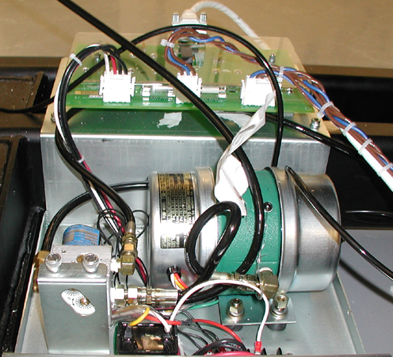

Operating Documentation
Direction 5193574-800, Rev# 22
LightSpeed 7.X Service Methods
Module Version 1.0, Version Date 10/20/08
Operating Documentation |
| Required Persons | Preliminary Reqs | Procedure | Finalization |
|---|---|---|---|
| 1 | Not Applicable | 60 mins | 15 mins |
| Last Revised: | May 18, 2008 |
| Item | Qty | Effectivity | Part# | Manufacturer | |
|---|---|---|---|---|---|
| Standard FE Tool Kit | 1 | - | - | - | |
| Item | Qty | Effectivity | Part# | Manufacturer |
|---|---|---|---|---|
| Tie-wraps and pads | - | - | - | |
| Hand towels and cleaners, for cleanup | - | - | - |
| Item | Qty | Effectivity | Part# | Manufacturer | |
|---|---|---|---|---|---|
| GTFR Board | 1 | - | - | - | |
| ||||
| Wear a grounded wrist strap when you handle a circuit board. | ||||
| ||||
| Follow ALL required safety and PPE procedures customary for your organization, when working on this product. | ||||
| NOTE: | Some steps may require service in blind areas. |
| Condition | Reference | Effectivity |
|---|---|---|
Only trained service personnel should service the GE CT Scanner. | - | - |
Gantry tilt, if possible. May aid in this replacement process. | - | - |
Gantry rotated to a position that offers the best service access, before turning off gantry 120/ 208 VAC. | - | - |
If possible, Tilt gantry back 20 degrees to aid in this procedure.
Remove gantry right side cover.
Refer to Parts Replacement → Gantry → Enclosure → (Cover Removal Procedure).
| ||||
| Always turn OFF the HVDC before the 120 VAC. Turning OFF 120 VAC power before HVDC power can result in equipment damage. | ||||
Turn off the three (3) main power switches (Axial Drive, HVDC, 120VAC) on the Service Switch Panel.
Remove gantry base covers on the left side (TGPU side of gantry)
| ||||
| Wear a grounded wrist strap when you handle a circuit board. | ||||
Remove the nuts that fasten the plastic cover to the GTFR Board.
Illustration 1: GTFR Board

Disconnect the cable connections from the board.
Remove the stand-offs that held the cover to remove the GTFR board.
Install new GTFR board.
Place new GTFR board in the same location as the original.
Install stand-offs and GTFR board cover.
Install cable connections.
Re-install the gantry base covers previously removed.
Restore power to the gantry from the service switch panel (AC Power, HVDC, Axial Drive enable and table drives reset).
Install the gantry right side cover.
Perform a Tilt Functional Test by using the Hydraulic Tilt Motor Speed Adjustment procedure.